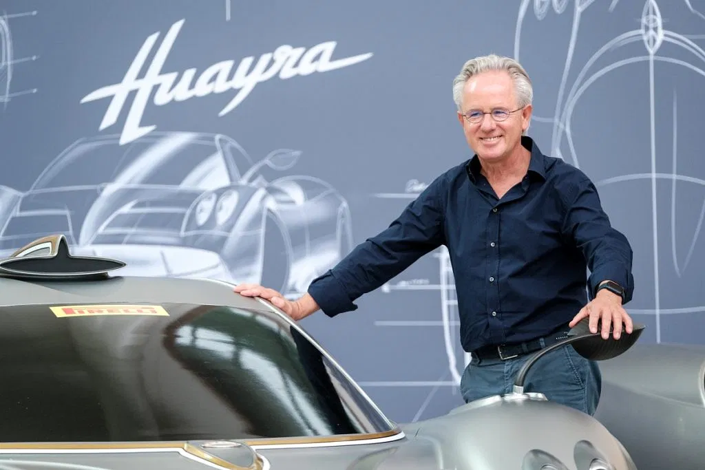
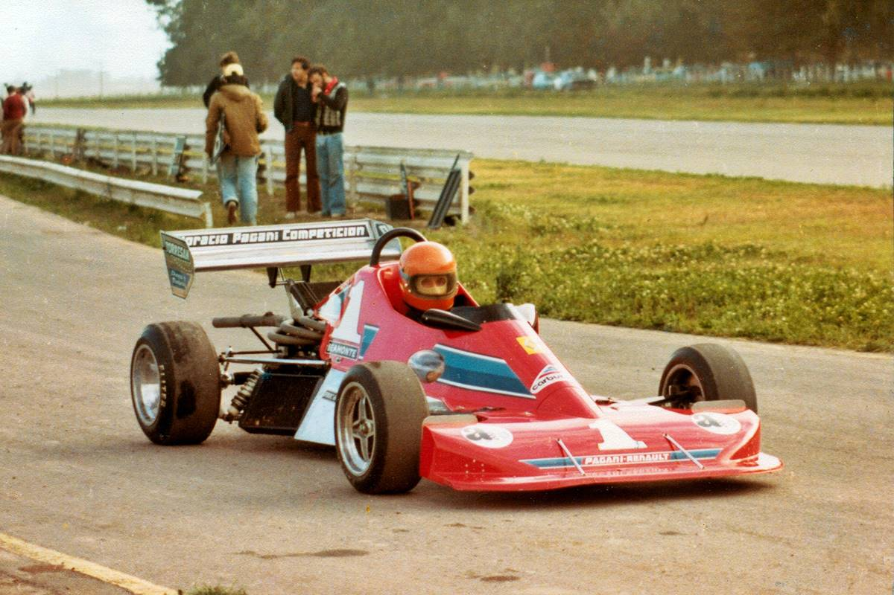
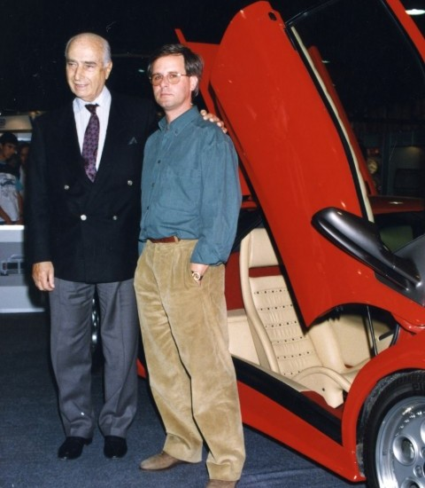

Horacio Pagani (Casilda, Provincia de Santa Fe, Argentina; el 10 de noviembre de 1955) es un diseñador de automóviles argentino-italiano, fundador y propietario de Pagani Automobili
Después de haber estado durante un año en la universidad, decidió abandonar sus estudios y a sus 22 años, debutó en el mundo de los automóviles de carreras diseñando un coche para la Fórmula 2 Renault.
Horacio gana un concurso de diseño del interior de una casa rodante, cuyo premio es entregado por Oreste Berta. Este último lo pone en contacto con Juan Manuel Fangio quien, a su vez, le da una carta de presentación para trabajar en Ferrari. No consigue el puesto en Ferrari, pero sí lo hace en Lamborghini. Al convertirse en el ingeniero en jefe de Lamborghini, le sugiere a Ferruccio Lamborghini que debían adquirir un Autoclave para la fabricación de piezas de fibra de carbono. Ferruccio no aprueba el proyecto y esto causa que Pagani pida un préstamo al banco para fundar "Pagani Composite Research" (investigación de materiales compuestos) en 1988. Esta nueva empresa colabora con Lamborghini en numerosos proyectos, incluyendo el rediseño del Lamborghini Countach, el concepto P140 y el Lamborghini Diablo.
A finales de los años 80, Horacio Pagani comenzó a diseñar su propio automóvil, inicialmente conocido como "Proyecto C8", con la intención de cambiar su nombre en honor al legendario piloto de Fórmula 1 Juan Manuel Fangio, llamándolo "Fangio F1". Pagani, a quien algunos comparan con Enzo Ferrari, se ha destacado como uno de los principales creadores en el sector de los automóviles de gran turismo, introduciendo innovaciones en la industria automotriz, como el uso pionero de materiales compuestos como la fibra de carbono. En 1991, Pagani Modena Design fue fundada para satisfacer la creciente demanda de servicios de diseño, ingeniería y producción de prototipos. En 1992, comenzó la construcción del prototipo "Fangio F1", que fue probado con éxito en el túnel de viento Dallara en 1993. Posteriormente, en 1994, Mercedes-Benz acordó suministrar motores V12 a Pagani. La sede central de la compañía se encuentra en San Cesario sul Panaro, provincia de Módena. El primer automóvil de producción de Pagani fue el Zonda C12, presentado en el Salón del Automóvil de Ginebra en 1999, luego de descartar el nombre "Fangio F1" como muestra de respeto hacia el piloto, quien falleció en 1995.